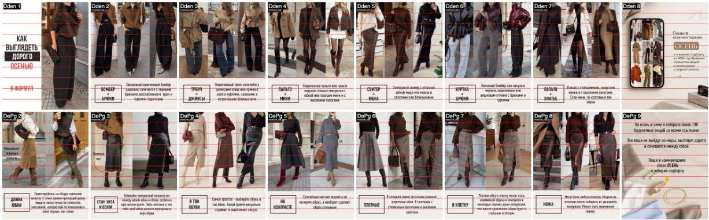
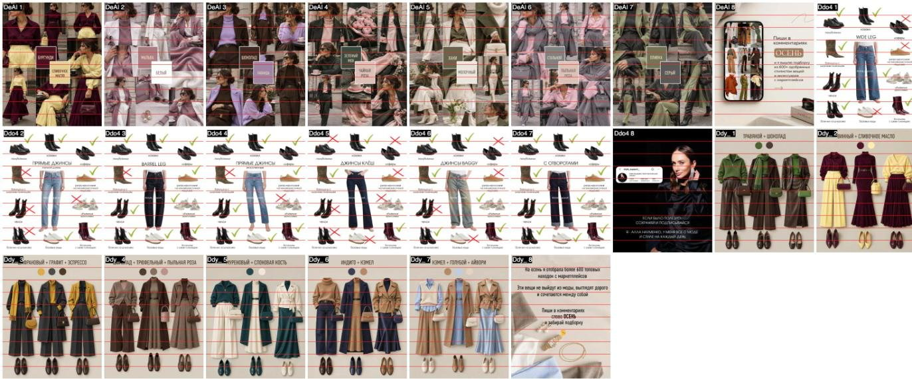

Правила дизайна каруселей
Измеримые нормы для каруселей Ирины в Instagram. Каждое правило проверяется на каждом слайде до того, как карусель уходит на утверждение. Версия 20.10.2026.
Кто отвечает. Карусели собирает и за дизайн отвечает Claude в треде «Карусели для Ирины». Отдельный проверяющий (другой агент, не тот, кто собирал) проходит по этому списку каждый слайд и возвращает замечания. Ирина смотрит карусель перед публикацией. Если правило нарушено, карусель не отправляется на утверждение.
1. Формат
- Слайд 1080×1350 px (4:5). Это максимум для вертикального поста, выше Instagram обрезает. У всех 39 проверенных слайдов конкурентов (effection_lady, style_support_) тоже 1080×1350. Carouselli, 19.03.2026: «Instagram caps portrait carousels at 4:5». Размеры конкурентов: замер через Instagram 20.10.2026.
- Обложка: всё важное в центральных 1012 px по ширине. В сетке профиля обложка показывается как 3:4, с боков срезается примерно по 34 px. Planoly, 31.10.2025: сетка 3:4 (1013×1350), 4:5 «crop it to a 3:4 ratio»; Oktopost, 28.01.2025: «loses a thin strip from the sides».
- Не больше 20 слайдов, у нас 7–9. Social Media Today, 08.08.2024
2. Текст
- Текст не ближе 80 px к краю слайда. Сейчас у нас 80 px. Carouselli: «keep all text at least 80px from any edge»; шаблон на GitHub open-carrusel (488 звёзд): безопасная зона 10% по бокам и сверху.
- Заголовок 56–90 px, основной текст не меньше 28 px. У нас заголовок обложки 84 px, текст 34–46 px. На телефоне слайд виден примерно в 1/3 размера, поэтому 28 px это минимум. Contentdrips, 27.05.2026: «Headline / hook text: 60–90 px», «Body copy: 28–36 px», «viewed at roughly one-third that size».
- Контраст текста к фону не меньше 4.5:1. Тёмно-коричневый на бежевом проходит, светлый текст на фото без подложки нет. WCAG 2.2, W3C: «a contrast ratio of at least 4.5:1».
- Текст никогда не лежит на лице или на вещи. Только на бежевой плашке над фото или на фоне (пол, стена). Заголовок обложки 2–6 слов. У 8 лучших обложек конкурентов заголовок короткий (2–6 слов) и не перекрывает ни лицо, ни товар: effection_lady 19.09, 7 842 лайка, 27.09, 18 134, style_support_ 23.09, 5 663.
3. Фото с человеком
- Над головой не больше 6% высоты фото. Лучше как у конкурентов: кадр от макушки или подбородка до обуви, место над головой 0%. Замер: у effection_lady в «6 формул» и «Как носить юбку зимой», 7 403 лайка все 14 фото с людьми обрезаны по голове или подбородку, над головой 0%. Wikipedia: лишнее место над головой это «dead space»; Nikon: «only leaving a small amount of airy space above your subject's head».
- Человек и образ занимают не меньше 85% высоты фото, стена и пол не больше 15%. Замер: у конкурентов фигура занимает 95–100% высоты фото, у флэтлея «Травяной + шоколад» вещи идут от 12% до 98% слайда. Ориентир 85% взят из требований к главному фото товара на маркетплейсах.
- Не резать по суставам: щиколотки, колени, запястья, локти, пальцы. Если слайд про обувь, обувь видна целиком. Digital Photography School: «I avoid cropping at any of the joints of the body»; Nikon: «you don't want to accidentally crop them at the ankles».
- Без жёлтого или зелёного оттенка. На нейтральном месте (стена, белая вещь) красный и синий канал отличаются не больше чем на 8 из 255. Жёлтые кадры выравниваем по серому. Shotkit: «Tungsten bulbs have a yellow hue»; Adobe: баланс по «an area that should be a neutral gray». Порог 8/255 наш.
- Без глубокого декольте и откровенных кадров. Если образ с вырезом, берём крупный план детали (руки, сумка, обувь). Решение Родиона 20.10.2026 по «Цвет + цвет».
- Глаза открыты, лицо не смазано. Лицо в кадре не обязательно: на лучших обложках конкурентов его нет. Разбор обложек конкурентов 19.10: «В топе нет обложек с лицом стилиста».
4. Вещи и источники
- Не больше трети вещей карусели из одного магазина. Магазины из гайда: LIME, Selfmade, Love Republic, Befree, 12 Storeez, Sela, Lamoda. Замечание Родиона 20.10.2026: «почему ты берешь только лайм?»
- Фото вещей только настоящие: с сайта магазина или с показа (Vogue Runway). Ничего не генерируется. У каждой вещи название, цена и ссылка, проверенные в день сборки, вещь в наличии.
- Тема подтверждена постом конкурента за последние 14 дней (ссылка, дата, лайки), и у каждого слайда указан источник.
- Источники не старше 3 месяцев от даты сборки (статьи, показы, посты). Более старые заменяем свежими. Замечание Родиона 20.10.2026: «не позднее, чем 3 месяца».
Замеры конкурентов

